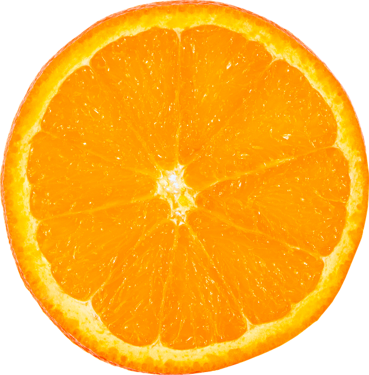
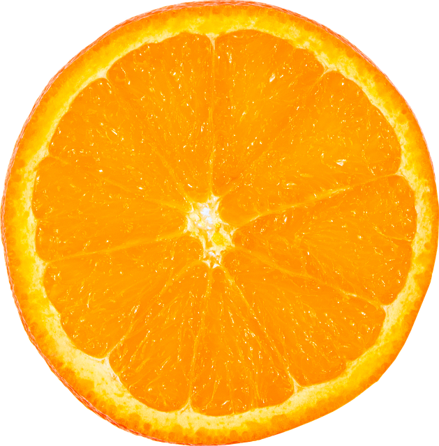

Pepsi
Welcome to the Pepsi experience, where every sip is a journey into a world of bold flavor and unforgettable moments! Picture this: You crack open a cold Pepsi can, and the effervescent bubbles dance on your tongue, awakening your taste buds with the perfect balance of sweetness and fizz. Now, imagine taking that experience to the next level with our interactive Pepsi can. Peel back the tab, and you'll find a QR code that opens up a virtual reality adventure. Dive into the Pepsi universe, where you can interact with flavor bursts, customize your own Pepsi can design, and even join virtual Pepsi challenges with friends. But the excitement doesn't stop there – share your experience on social media using #PepsiInteractive and stand a chance to win exclusive Pepsi merchandise. The more you engage, the more you unlock! Pepsi isn't just a drink; it's an interactive journey waiting for you to explore. Crack open a can, scan the code, and let the Pepsi adventure begin!